| まずはこれだけ・中国語入門単語836 (音声DL付)／中検準4級＆新HSK1〜3級語彙 | |
| 程莉 | |
| Wenyin Books (2014) | |
はじめに
本書は、中国語を学ぶにあたって最低限必要な入門単語836語を収録しています。
収録した836語は、中国語検定準4級の常用語彙約500語と、HSK1級〜3級の必須語彙593語の中から、両者で被っている語彙を取り除いたものであるため、本書を修了する事で上記検定試験合格に必要な語彙はほぼマスターすることができます。
また本書は、「基礎単語を素早く、効率よく暗記」できることを主眼において作成しています。レイアウトは、紙のように一覧性が高く、左から中国語、ピンイン、日本語の順に表示しているため、手などで隠しながら素早くチェックしていくことができます。メモ機能など、Kindleならではの機能を併用すれば、より学習効果が高まることでしょう。
また、単語を暗記するには正しく発音された音声が欠かせません。本書では、ナレーターによる美しい標準語音声（巻末にダウンロード方法を掲載）を収録しているので、発音を確かめながら暗記できます。
本書の活用により、一人でも多くの学習者が基本語彙を習得し、中国語の上達や検定試験合格への大きなステップとなることを願っています。
入門単語をマスターしたら
入門単語の次は、初級単語にチャレンジしましょう。『中国語初級単語1272 (音声DL付)／セットでおぼえる中検4級＆新HSK4級語彙』では、中国語検定4級の常用語彙（準4級常用語彙を除く）と、HSK4級の必須語彙の中から、両者で被っている語彙を取り除いたものであるため、本書を修了する事で上記検定試験合格に必要な語彙はほぼマスターすることができます。
中国語の基本をおさらいしたい方へ
『中国語入門セット／最初に覚えたい基本フレーズ』では、中国語入門者が最初に覚えておいた方が良い、定番の基本フレーズ、置き換えフレーズ、物を数えるときに使う数量詞、日付や動作などの基本語彙、そして生活や仕事に使う身近な語彙を厳選して盛り込んでいます。収録した257の短文やフレーズと、568の語彙をすべてマスターすれば、簡単な会話や意思表示ができるようになるでしょう。またすべての短文、フレーズと語彙は、音声を確認しながら練習できるので、比較的短期間で効率よく暗記できます。
注意事項
日本向けKindle電子書籍フォーマットの仕様上、一部のKindle Fire端末において、中国語簡体字が正しく表示されない可能性があるため、本書に収録の中国語には画像を用いています。そのため、中国語については検索、文字拡大縮小、背景色変更が行えないので予めご了承ください。
本書の使い方
本書は、基礎単語836語を無理なく暗記できるように、20単語を一区切りとし、付属の音声に合わせて練習できます。各区切りの最初に「T-xx（xxは数字）」というトラック番号が付いていますが、この番号は、付属のMP3音声のトラック番号に該当します。単語と単語の間には、約1秒のポーズを入れています。
品詞、記号の表記
[名] : 名詞／[動] : 動詞／[形] : 形容詞／[副] : 副詞／[助動] : 助動詞／[数] : 数詞／[接] : 接続詞／[前] : 前置詞／[感] : 感嘆詞／[量] : 量詞／[接頭] : 接頭辞／表記なし：フレーズ、その他
ピンインの間に挿入される（//）の記号 : 間にほかの成分が挿入されることがある
新HSKx の表記（xは1〜6の数字）：その語彙が該当する新HSKの級数
練習
入門単語・836語
| T-01 |
| zàijiàn | [挨] さようなら、ではまた 新HSK1 |
| qiánmian | [名] 前、前方 新HSK1 |
| lǚyóu | [動] 旅行する、観光する 新HSK2 |
| jiǎndān | [形] 簡単だ 新HSK3 |
| qíng | [形] 晴れている 新HSK2 |
| zìdiǎn | [名] （漢字の意味や用法を記した）辞書 新HSK3 |
| 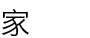 | jiā | [名] 家 新HSK1 |
| zìxíngchē | [名] 自転車 新HSK2 |
| duì | [前] ...に（向かって）、...に（対して） 新HSK2 |
| dǎ lánqiú | バスケットボールをする 新HSK2 |
| shuō | [動] 言う、話す |
| yǒu | [動] ある、いる、所有する、持っている 新HSK1 |
| Duì bu qǐ | [挨] すみません、申し訳ありません 新HSK1 |
| shuǐguǒ | [名] 果物 新HSK2 |
| jiǎng | [動] 話す、言う 新HSK3 |
| chéngshì | [名] 都市 新HSK3 |
| huāyuán | [名] 庭園、花園 新HSK3 |
| tí | [名] （練習や試験の）問題 新HSK2 |
| xíng | [形] よろしい、大丈夫だ、もう結構 新HSK4 |
| jiǔ | [形] （時間が）長い、久しい 新HSK3 |
| T-02 |
| duōshao | [代] いくつ、どのくらい 新HSK1 |
| dào | [動] 着く、到着する 新HSK2 |
| dōngtiān | [名] 冬 新HSK3 |
| xìng | [動] 名字は...である 新HSK2 |
| xiāngjiāo | [名] バナナ 新HSK3 |
| zhōumò | [名] 週末 新HSK3 |
| Zuótiān | [名] 昨日 新HSK1 |
| yǔ | [名] 雨 |
| kū | [動] 泣く 新HSK3 |
| zhù | [動] 住む、泊まる 新HSK1 |
| yún | [名] 雲 新HSK3 |
| zhèr | [代] ここ 新HSK1 |
| xiǎoháir | [名] 子供 |
| hánjià | [名] 冬休み 新HSK4 |
| lìshǐ | [名] 歴史 新HSK3 |
| 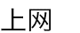 | shàng//wǎng | [動] インターネットをする 新HSK3 |
| yáng | [名] 羊 |
| shǒubiǎo | [名] 腕時計 新HSK2 |
| guān | [動] （スイッチを）切る、閉める、閉じる 新HSK3 |
| guò | [動] （ある場所を）通る、（時間が）経過する、（時を）過ごす [助] ...したことがある 新HSK2 |
| T-03 |
| jīhuì | [名] 機会、チャンス 新HSK3 |
| 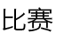 | bǐsài | [名] 試合 新HSK3 |
| 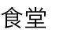 | shítáng | [名] 食堂 |
| Rìwén | [名] 日本語 |
| jiàoshì | [名] 教室 新HSK2 |
 |
ná | [動] 持つ、つかむ 新HSK3 |
| qítā | [代] その他（のもの） 新HSK3 |
| wèile | [前] ...のため、...するために 新HSK3 |
| shāngliang | [動] 相談する 新HSK4 |
| hēibǎn | [名] 黒板 新HSK3 |
| fā//shāo | [動] 熱が出る 新HSK3 |
| yàoshi | [名] 鍵 新HSK4 |
| huì | [助動] ...するだろう、...するはずである 新HSK1 |
| lǚxíng | [動] 旅行する |
| zhǐ | [名] 紙 |
| gēnjù | [前] ...に基づく、...による 新HSK3 |
| sǎn | [名] 傘 新HSK3 |
| lán | [形] 青色の 新HSK3 |
| kèqì | [形] 思慮深い、丁寧である |
| wài | [名] 外 新HSK2 |
| T-04 |
| shǎo | [形] 少ない 新HSK1 |
| fēn | [量] 分、点数・得点を数える [動] 分ける、分かれる 新HSK3 |
| kàn | [動] 見る 新HSK3 |
 |
yīnggāi | [助動] ...すべきである；...のはずだ 新HSK3 |
| wàzi | [名] 靴下 新HSK4 |
 |
qíshí | [副] その実、実のところ、実は 新HSK3 |
| xìnfēng | [名] 封筒 新HSK5 |
| yǎnjing | [名] 目 新HSK2 |
| wán//chéng | [動] やり遂げる、完成する 新HSK3 |
 |
xīngqíwǔ | [名] 金曜日 |
| nàlǐ | [代] そこ、あそこ |
| dàyī | [名] コート |
| xuě | [名] 雪 新HSK2 |
| hùzhào | [名] パスポート 新HSK3 |
| zhōngtóu | [名] 時間の単位 |
| tóufa | [名] 髪の毛 新HSK3 |
| xíguàn | [名] 習慣 新HSK3 |
| zhàogù | [動] 面倒を見る、世話をする 新HSK3 |
| mài | [動] 売る 新HSK2 |
| ránhòu | [副] それから、その後 新HSK3 |
| T-05 |
| xiōngdì | [名] 男兄弟 新HSK5 |
| diànyǐng | [名] 映画 新HSK1 |
| bǎi | [数] 百 新HSK2 |
| jiǎo | [名] 脚 新HSK3 |
| 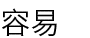 | róngyì | [形] 容易である、簡単である；...しやすい、...しがちである 新HSK3 |
| jīnnián | [名] 今年 |
| yìdiǎnr | [数量] ちょっと（分量を表す） |
| tóngyì | [動] 同意する 新HSK3 |
| xiàkè | [動] 授業が終わる |
| 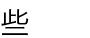 | xiē | [量] いくらか、少し 新HSK1 |
| hēi | [名] 黒 新HSK2 |
| kāi | [動] （スイッチを）つける 新HSK1 |
| bànfǎ | [名] 方法、やり方 新HSK3 |
| wèntí | [名] 質問、問題 新HSK2 |
| yóuyǒng | [動] 水泳する 新HSK2 |
| kùnnan | [形] 困難だ [名] 困難 新HSK4 |
| jīnglǐ | [名] 経営者；ある部門の責任者、マネージャー 新HSK3 |
| kě'ài | [形] かわいい 新HSK3 |
| dìdi | [名] 弟 新HSK2 |
| 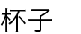 | bēizi | [名] コップ、グラス 新HSK1 |
| T-06 |
| biàn | [量] 回、度（始めから終わりまで通しての回数を数える） 新HSK4 |
| qiāo | [動] たたく、打ち鳴らす 新HSK4 |
| dōu | [副] 全部、いずれも 新HSK1 |
| qúnzi | [名] スカート 新HSK3 |
| zhǒng | [量] 種、種類 新HSK3 |
| dì | [接頭] 整数の前に用い順序を表す |
| zhēn | [副] 実に、本当に 新HSK2 |
 |
qíguài | [形] 不思議である、おかしい 新HSK3 |
| rènao | [形] にぎやかである 新HSK4 |
| cōngmíng | [形] 利口である、賢い 新HSK3 |
| bié | [副] ...しないように 新HSK2 |
| jiēdào | [名] 大通り、街路；町内 新HSK3 |
| yāoqiú | [名] 要望、要求 新HSK3 |
| yīnyuè | [名] 音楽 新HSK3 |
| xiàbian | [名] 下、下の方 |
| xíngli | [名] 荷物 |
| dǎ | [動] 打つ、たたく、放つ |
| dìfang | [名] 場所、所、地方 新HSK3 |
| fēnzhōng | [量] ...分間 新HSK1 |
| néng | [助動] ...できる、...する能力がある 新HSK1 |
| T-07 |
| hòunián | [名] 再来年 |
| Hànyǔ | [名] 中国語 新HSK1 |
 |
tèbié | [副] とりわけ、特に 新HSK3 |
| dōng | [名] 東 新HSK3 |
| 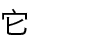 | tā | [代] それ、そのもの（事物あるいは動物を指す） 新HSK2 |
| guà | [動] 掛ける、吊るす、電話を切る 新HSK4 |
| cháng | [形] 長い 新HSK2 |
| gùshi | [名] 物語 新HSK5 |
| dōngxi | [名] 物、品物 新HSK1 |
| fēijī | [名] 飛行機 新HSK1 |
| cèsuǒ | [名] トイレ 新HSK5 |
| shíhou | [名] （特定の）時、時刻 新HSK1 |
| xiàozhǎng | [名] 校長、学長 新HSK3 |
| kèběn | [名] 教科書 |
| shuō//huà | [動] 話をする 新HSK1 |
| àirén | [名] 配偶者 |
| qǐ//chuáng | [動] 起床する、起きる 新HSK2 |
| yíyàng | [形] 同じである 新HSK3 |
 |
huìyì | [名] 会議 新HSK3 |
| cídiǎn | [名] 辞書 新HSK4 |
| T-08 |
 |
shì | [動] 試す 新HSK4 |
| huà | [名] 言葉、話 |
| zhōngyú | [副] ついに、とうとう 新HSK3 |
| jǐnzhāng | [形] 緊張している 新HSK4 |
| kē | [量] （植物を数える）本、株 新HSK4 |
 |
tā | [代] 彼 新HSK1 |
| pánzi | [名] 大皿 新HSK3 |
| xīngqítiān | [名] 日曜日 |
| guānxi | [名] 関係 新HSK3 |
| māo | [名] 猫 新HSK1 |
| qiántiān | [名] おととい |
| yuǎn | [形] 遠い 新HSK2 |
| xiézi | [名] 靴 新HSK3 |
| liàng | [量] 台（自転車や自動車の台数を数える） 新HSK3 |
| tāmen | [代] 彼女たち |
| chūxiàn | [動] 出現する、現れる 新HSK3 |
| a | [助] 文末に用いて感嘆の意を表す、催促・命令などの語気を表す、文末に置き軽い疑問を表す 新HSK3 |
| lǎoshī | [名] 先生（教師に対する敬称） 新HSK1 |
| fēicháng | [副] 非常に、極めて 新HSK2 |
| nàyàng | [代] あのような、そのような |
| T-09 |
| mǎ | [名] 馬 新HSK3 |
| gāng | [副] ...したばかり |
| shù | [名] 樹木、木 新HSK3 |
| 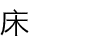 | chuáng | [名] ベッド |
| cānguān | [動] 見学する 新HSK4 |
| nánguò | [形] つらい、悲しい 新HSK3 |
| tóngshì | [名] 同僚 新HSK3 |
| Chūn Jié | [名] 旧正月 |
| bú yòng | [副] ...する必要はない |
| cì | [量] 回、度 新HSK2 |
| zǎoshang | [名] 朝 新HSK2 |
| 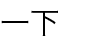 | yíxià | [数量] ちょっと（動作を表す） |
| wàn | [数] 万 新HSK3 |
| míngtiān | [名] 明日 新HSK1 |
| yùndong | [動] 運動する、スポーツする [名] 運動、スポーツ 新HSK2 |
| shíjiān | [名] 時間、時 新HSK2 |
| míngbai | [動] わかる 新HSK3 |
| shēngri | [名] 誕生日 新HSK2 |
| Nín | [代] "你"の敬称 新HSK2 |
| chúle | [前] ...を除いて、...以外 新HSK3 |
| T-10 |
| duànliàn | [動] 鍛える 新HSK3 |
| jiē | [動] 受ける、受け取る、出迎える 新HSK3 |
| yī | [数] 一 新HSK1 |
| wèi shénme | なぜ、どうして 新HSK2 |
| xì | [形] 細い |
| Zhōngguó | [名] 中国 新HSK1 |
| 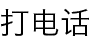 | dǎ diànhuà | 電話をかける 新HSK1 |
| chūzūchē | [名] タクシー 新HSK1 |
| shuāng | [量] 対になっているものを数える 新HSK3 |
| diànzǐ yóujiàn | [名] Eメール 新HSK3 |
| nǎ | [代] どの、どっちの 新HSK1 |
| 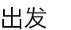 | chūfā | [動] 出発する 新HSK4 |
| qīngchu | [形] はっきりしている 新HSK3 |
| xiàwǔ | [名] 午後 新HSK1 |
| xīwàng | [名] 望み、願い [動] 希望する 新HSK2 |
| jīchǎng | [名] 空港 新HSK2 |
| nǔlì | [動] 努力する [名] 努力 新HSK3 |
| gāngbǐ | [名] 万年筆 |
| yīn | [形] 曇っている 新HSK2 |
| shū | [名] 本 新HSK1 |
| T-11 |
| xiǎoshí | [名] （時間の単位）時間 新HSK2 |
| qiǎn | [形] 浅い 新HSK5 |
 |
nǚ | [形] 女の |
| míngzi | [名] 名前 新HSK1 |
| fā | [動] 発送する、出す、支給する、配る 新HSK4 |
| 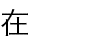 | zài | [動] ある、いる [前] ...で、...において 新HSK1 |
| fàndiàn | [名] ホテル |
| chuānghu | [名] 窓 新HSK4 |
| 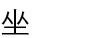 | zuò | [動] 座る、（乗り物に）乗る 新HSK1 |
| xiǎoxué | [名] 小学校 |
| zázhì | [名] 雑誌 新HSK4 |
| xūyào | [動] 必要とする 新HSK3 |
| yóuxì | [名] ゲーム、遊び 新HSK3 |
| chéngjì | [名] 成績、成果 新HSK3 |
| mǔqīn | [名] 母親 新HSK4 |
| hé | [名] 川 新HSK3 |
| liáng | [形] 冷たい、冷めている |
| suīrán | [接] ...ではあるが 新HSK3 |
| biéde | ほかの |
| Yīngwén | [名] 英語 |
| T-12 |
| máojīn | [名] タオル 新HSK4 |
| biǎoshì | [動] 表す、示す 新HSK3 |
| jīntiān | [名] 今日 新HSK1 |
| xiànzài | [名] いま、現在 新HSK1 |
| nà | [代] その、あの；それ、あれ 新HSK1 |
| xiān | [副] まず、先に 新HSK3 |
| juédìng | [動] 決める、決定する 新HSK3 |
| Hànzì | [名] 漢字 |
| fēng | [量] ...通（封書などを数える） |
| kāishǐ | [動] 始める；始まる 新HSK2 |
| kōng | [名] 暇 |
| Běijīng | [名] 北京 新HSK1 |
| kǎoshì | [名] 試験 新HSK2 |
| xīngqī | [名] 週、週間；曜日 新HSK1 |
| zěnme | [代] どのように、どうやって 新HSK1 |
| gàn | [動] （仕事を）する、やる、担当する 新HSK5 |
| hǎochī | [形] （食べて）おいしい 新HSK2 |
| zìjǐ | [代] 自分 新HSK3 |
| zhuōzi | [名] テーブル、机 新HSK1 |
| bā | [数] 八 新HSK1 |
| T-13 |
| mǐfàn | [名] ご飯 新HSK1 |
| ài | [動] 愛する 新HSK1 |
 |
wàibian | [名] 外、外の方 |
| niàn | [動] 音読する、朗読する 新HSK5 |
| bù | [副] ...しない、...でない 新HSK1 |
| yǐzi | [名] （背もたれのある）椅子 新HSK1 |
| 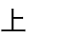 | shang | [名] 物体の上や表面を表す [動] （職場や学校に）通う、（機械の）ねじを締める 新HSK5 |
| chāoshì | [名] スーパー 新HSK3 |
| yánsè | [名] 色 新HSK2 |
| kèrén | [名] 客 新HSK3 |
| zhè | [代] これ、それ；この、その 新HSK1 |
| guā | [動] （風が）吹く、（顔を）剃る |
| tǐyù | [名] 体育、スポーツ 新HSK3 |
| gōngfu | [名] 時間、暇 新HSK6 |
 |
huánjìng | [名] 環境、周りの状況 新HSK3 |
| xīguā | [名] スイカ 新HSK2 |
| mǎnyì | [動] 満足する、意にかなう 新HSK3 |
| kǔ | [形] 苦い 新HSK4 |
| piào | [名] 切符、チケット 新HSK2 |
| niǎo | [名] 鳥 新HSK3 |
| T-14 |
| fúwùyuán | [名] （ホテルやレストランの）店員、従業員 新HSK2 |
| nǚ'ér | [名] 娘 新HSK1 |
| dòngwù | [名] 動物 新HSK3 |
| liànxí | [動] 練習する 新HSK3 |
| bàozhǐ | [名] 新聞 新HSK2 |
| 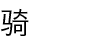 | qí | [動] （またいで）乗る 新HSK3 |
| mèimei | [名] 妹 新HSK2 |
| lí | [前] ...から 新HSK2 |
| nǐ | [代] 君、あなた 新HSK1 |
| yèlǐ | [名] 夜中 |
| tuǐ | [名] 足 新HSK3 |
| qùnián | [名] 昨年 新HSK2 |
| tiào//wǔ | [動] 踊る 新HSK2 |
| kùzi | [名] ズボン 新HSK3 |
| zhī | [量]...本（棒状の短い物を数える） 新HSK6 |
| hěn | [副] とても 新HSK1 |
| yuè | [名] （暦の）月 新HSK1 |
 |
shǒujī | [名] 携帯電話 新HSK2 |
| 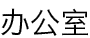 | bàngōngshì | [名] 事務室、オフィス 新HSK3 |
| Měiguó | [名] アメリカ |
| T-15 |
| nǎlǐ | [代] どこ |
| chēzhàn | [名] 駅、バス停 |
| xiào | [動] 笑う 新HSK2 |
| Rìyǔ | [名] 日本語 |
| cǎo | [名] 草 新HSK3 |
| lǎoye | [名] （母方の）祖父 |
| 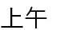 | shàngwǔ | [名] 午前 新HSK1 |
| diànshì | [名] テレビ 新HSK1 |
 |
wǔ | [数] 五 新HSK1 |
 |
rènzhēn | [形] まじめである、真剣である 新HSK3 |
| 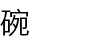 | wǎn | [名] 碗、茶碗 [量] 杯（碗に盛った食物の量） 新HSK3 |
 |
yǒudiǎnr | [副] ちょっと（望ましくないことを表す） |
| bìxū | [副] 必ず...ねばならない 新HSK3 |
| chúfáng | [名] 台所 新HSK3 |
| cuò | [形] 間違っている 新HSK2 |
| kuài | [形] （速度が）速い 新HSK2 |
| zhù//yì | [動] 注意する、注意を払う 新HSK3 |
| dùzi | [名] 腹、おなか 新HSK4 |
| měi | [代] ...あたり、...につき、どれも 新HSK2 |
| pàng | [形] 太っている 新HSK3 |
| T-16 |
| zhe | [助] 動作や状態の持続を表す、...して（...する）、...しながら（...する） 新HSK2 |
| jùzi | [名] 文、センテンス 新HSK3 |
| hǎo | [形] よい 新HSK1 |
| guójiā | [名] 国、国家 新HSK3 |
| zhàoxiàng | [動] 写真を撮る |
| zhèyang | [代] このような、このように |
| diànchē | [名] 電車 |
| bǐjiào | [副] 比較的、割に 新HSK3 |
| 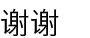 | xièxie | [挨] ありがとうございます [動] 感謝する、お礼を言う 新HSK1 |
| ěrduo | [名] 耳 新HSK3 |
| tóu | [名] 頭 |
| zhǔnbèi | [動] 準備する、用意する 新HSK2 |
| kōngtiáo | [形] エアコン 新HSK3 |
| bān | [名] 組、クラス 新HSK3 |
| shì | [名] 事、用事 |
| 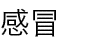 | gǎnmào | [動] 風邪をひく 新HSK3 |
| fàng//xīn | [動] 安心する 新HSK3 |
| kě | [形] のどが渇く 新HSK3 |
| nàxiē | [代] それら、あれら |
| yuànzi | [名] 庭 |
| T-17 |
| xiūxi | [動] 休む、休憩する 新HSK2 |
| jiè | [動] 借りる 新HSK3 |
| qiánbāo | [名] 財布 |
| gōnggòng qìchē | [名] バス 新HSK2 |
| 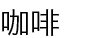 | kāfēi | [名] コーヒー 新HSK2 |
| xīngqíyī | [名] 月曜日 |
| yìqǐ | [副] 一緒に 新HSK2 |
| gèng | [副] いっそう、ますます 新HSK5 |
| shān | [名] 山 |
| fùqīn | [名] 父 新HSK4 |
| tàiyáng | [名] 太陽 新HSK3 |
| yǎnjìng | [名] めがね 新HSK3 |
| xiě | [動] 書く 新HSK1 |
| shuǐpíng | [名] 水準、レベル 新HSK3 |
| miànbāo | [名] パン 新HSK3 |
| wǎnshang | [名] 夜 新HSK2 |
| jīngguò | [動] （ある場所を）通過する、通る、経由する [名] 過程、いきさつ 新HSK3 |
| líng | [数] ゼロ 新HSK1 |
| le | [助] 新しい状況の発生や変化を表す 新HSK1 |
| là | [形] 辛い 新HSK4 |
| T-18 |
| xiānsheng | [名] ...さん 新HSK1 |
| hàomǎ | [名] 番号 新HSK4 |
| zì | [名] 字 新HSK1 |
| tán | [名] 話す、話し合う 新HSK4 |
| jìn | [形] 近い 新HSK3 |
| nǚren | [名] 女 新HSK2 |
| jiàn//miàn | [動] 会う 新HSK3 |
| cānjiā | [動] 参加する、加わる 新HSK3 |
| yǐqián | [名] 以前、...以前 新HSK3 |
| yuán | [形] （平面的に）丸い 新HSK2 |
| shīfu | [名] 師匠 新HSK4 |
| nàme | [代] あのように、そのように |
| pǎo//bù | [動] 走る、駆ける 新HSK2 |
| yān | [名] たばこ |
| shàngxué | [名] 登校する |
| dǎsuan | [動] ...するつもりだ、...する予定である 新HSK3 |
| jié | [名] 節、祝日 新HSK5 |
| jié//hūn | [動] 結婚する 新HSK3 |
| zhàopiàn | [名] 写真 新HSK3 |
| niánjì | [名] 年齢 新HSK5 |
| T-19 |
| xià | [動] 降る 新HSK1 |
| píjiǔ | [名] ビール 新HSK3 |
| 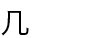 | jǐ | [数] いくつかの（10までの不定の数を指す） 新HSK3 |
| fù | [動] 支払う |
| érzi | [名] 息子 新HSK1 |
| 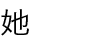 | tā | [代] 彼女 新HSK1 |
| sàn//bù | 散歩する 新HSK4 |
 |
fúwù | [動] サービスする |
| ne | [助] ...は？ 新HSK1 |
| lǎo | [接頭] 一般に年長者の姓につけて親しみを表す [形] 年をとっている [形] 元々の、変わりのない 新HSK3 |
| shéi ; shuí | [代] 誰 新HSK1 |
| shuǐ | [名] 水 新HSK1 |
| běn | [量] 本やノート類を数える 新HSK1 |
| pǎo | [動] 走る |
| zuǒbian | [名] 左、左側 新HSK2 |
| 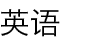 | Yīngyǔ | [名] 英語 |
| zhème | [代] このように |
| bǐ | [前] ...より、...に比べて 新HSK2 |
| dà | [形] 大きい 新HSK1 |
| bāo | [動] 包む 新HSK3 |
| T-20 |
| gōngzuò | [名] 仕事 新HSK1 |
| suǒyǐ | [接] それゆえ、だから 新HSK2 |
| zuì | [副] 最も、一番 新HSK2 |
| sījī | [名] 運転手 新HSK3 |
| qǐng | [動] どうぞ...してください 新HSK1 |
| jiǔ | [名] 酒 |
| jiù | [形] 古い、昔の 新HSK3 |
| bīnguǎn | [名] ホテル、旅館 新HSK3 |
| páshān | [動] 山登りをする 新HSK3 |
| xiǎng | [動] （方法や意味などを）考える [助動] ...したい、...したいと思う 新HSK1 |
| guāfēng | 風が吹く 新HSK3 |
| fāxiàn | [動] 発見する；気づく 新HSK3 |
| dài | [動] 連れる、率いる、携帯する、持つ 新HSK3 |
| tiānqì | [名] 天気 新HSK1 |
| 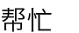 | bāng//máng | [動] 手伝う、手助けする 新HSK3 |
| tiān | [量] ...日（日にちを数える） |
| rèqíng | [形] 心がこもっている、親切である 新HSK3 |
| de | [助]...の（連体修飾語の後に置き、名詞を修飾する） 新HSK1 |
| cái | [副] （...して）やっと、はじめて 新HSK3 |
| ràng | [動] （わきへ）よける；譲る、...させる、...させておく 新HSK2 |
| T-21 |
| duǎn | [形] 短い 新HSK3 |
| xiàtiān | [名] 秋 新HSK3 |
 |
xuéxí | [動] 学ぶ、勉強する 新HSK1 |
| jiāo | [動] （知識や技能を）教える 新HSK3 |
| zǎo | [形] （時間が）早い |
| yǒuyìsi | 面白い |
| 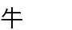 | niú | [名] 牛 |
| děng | [動] 待つ 新HSK2 |
| huài | [動] 壊れる、腐る 新HSK3 |
| xián | [形] 塩辛い、しょっぱい 新HSK4 |
| zhèngzài | [副] ちょうど...している 新HSK2 |
| nánren | [名] 男 新HSK2 |
| kè | [名] 授業 新HSK2 |
| zúqiú | [名] サッカー |
| sì | [数] 四 新HSK1 |
| gǎn | [助動] ...する勇気がある、思い切って...する 新HSK3 |
| máoyī | [名] セーター |
| tīngjiàn | [動] 聞こえる |
| zháo//jí | [動] 焦る 新HSK3 |
| zhèlǐ | [代] ここ |
| T-22 |
| bèi | [動] 暗唱する 新HSK3 |
| 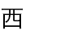 | xī | [名] 西 新HSK3 |
| mén | [名] ドア、扉；門 新HSK2 |
| pà | [動] 怖がる |
| gēn | [名]（草や木の）根 [量] 細長いものを数える 新HSK5 |
| tǎng | [動] 横になる、寝転ぶ 新HSK4 |
| shōu | [動] 徴収する、回収する 新HSK4 |
 |
liǎng | [数] 二（多く量詞の前などに用いる） 新HSK2 |
| 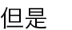 | dànshì | [接] しかし、...だが 新HSK2 |
| dài | [動] （頭・首・顔・手などに）着用する 新HSK4 |
| ānjìng | [形] 静かである 新HSK3 |
| Rìběn | [名] 日本 |
| zhàoxiāngjī | [名] カメラ 新HSK3 |
| xiǎoxīn | [動] 気をつける、注意する 新HSK3 |
| shénme shíhou | いつ |
 |
àihào | [動] 愛好する、好む 新HSK3 |
| tài | [副] あまりに、...すぎる 新HSK1 |
| liǎojiě | [動] よく知っている、よくわかっている 新HSK3 |
| shí | [数] 十 新HSK1 |
| tíng | [動] 止める、やめる、止まる、やむ |
| T-23 |
| wàiyǔ | [名] 外国語 |
| 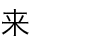 | lái | [動] 来る 新HSK1 |
| zǒngshì | [副] いつも 新HSK3 |
| píngguǒ | [名] リンゴ 新HSK1 |
| chà | [形] 悪い、劣っている [動] 足りない、欠ける 新HSK3 |
| cài | [名] おかず、料理 新HSK1 |
| huàn | [動] 換える、取り替える 新HSK3 |
| 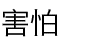 | hài//pà | [動] 怖がる 新HSK3 |
| 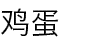 | jīdàn | [名] 卵 新HSK2 |
| dǒng | [動] 分かる、理解する 新HSK2 |
 |
guò | [動] （ある場所を）通る、（時間が）経過する、（時を）過ごす [助] ...したことがある 新HSK2 |
| huángsè | [名] 黄色 新HSK3 |
| suān | [形] 酸っぱい 新HSK4 |
 |
jìde | [動] 覚えている 新HSK3 |
| jí | [副] （動詞または形容詞＋"极了"の形で）極めて、実に 新HSK3 |
| āyí | [名] おばさん（母親と同年配の人に対する呼称） 新HSK3 |
| yǒu//míng | [形] 有名だ 新HSK3 |
| biǎoyǎn | [動] 演じる、上演する 新HSK3 |
| xīngqíliù | [名] 土曜日 |
| xiǎoshuō | [名] 小説 新HSK4 |
| T-24 |
| wàiguó | [名] 外国 |
| dìyī | [数] 最初の、一番目の 新HSK2 |
| jiàn | [量] 件、着、枚（事柄や衣類などを数える） 新HSK2 |
| 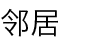 | línjū | [名] 隣人 新HSK3 |
| 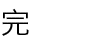 | wán | [動] 終わる、...し終わる 新HSK2 |
| fànguǎn | [名] 料理屋、飲食店 新HSK1 |
 |
sān | [数] 三 新HSK1 |
| kǒu | [量] 口の動作の回数を表す 新HSK3 |
| jièshào | [動] 紹介する 新HSK2 |
| méiyǒu | [動] ない、持っていない |
| mǐ | [名] 米 [量] メートル 新HSK3 |
| yě | [副] ...も 新HSK2 |
| chá | [名] 茶 新HSK1 |
| yuànyì | [助動] 承知する、進んで...する、...する気がある 新HSK3 |
| wàngjì | [動] 忘れる 新HSK3 |
| shūshu | [名] 叔父 新HSK3 |
| xǐshǒujiān | [名] お手洗い 新HSK3 |
| wèn | [動] 聞く、質問する 新HSK2 |
| péngyou | [名] 友達 新HSK1 |
| nǎxiē | [代] どれ、どんな |
| T-25 |
| jīngcháng | [副] しょっちゅう、よく 新HSK3 |
| huòzhě | [接] あるいは 新HSK3 |
| háizi | [名] 子供 新HSK2 |
| 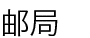 | yóujú | [名] 郵便局 新HSK5 |
| shāngdiàn | [名] 店、商店 新HSK1 |
| 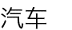 | qìchē | [名] 自動車 |
 |
de | [助] 動詞または形容詞の後に置き、様態補語を導く 新HSK2 |
| xīnwén | [名] ニュース、報道 新HSK3 |
| hóng | [名] 赤 新HSK2 |
| yào | [動] ほしい、要る 新HSK3 |
| yìzhí | [副] （方向を変えずに）まっすぐに、ずっと 新HSK3 |
| jiǎozi | [名] ギョーザ 新HSK4 |
| jiāo | [動] 渡す、提出する、付き合う 新HSK4 |
| zài | [副] 再び、また、...してから、それから 新HSK2 |
| yòu | [副] また（動作や状態が繰り返されることを表す） 新HSK3 |
| tīng | [動] 聞く 新HSK1 |
| zhōngjiān | [名] 真ん中 新HSK3 |
| rè | [形] 熱い；暑い 新HSK1 |
| xué | [名] 学ぶ |
 |
yǐngxiǎng | [動] 影響する、影響を及ぼす [名] 影響 新HSK3 |
| T-26 |
| tī | [動] 蹴る |
| nán | [形] 男の |
| shàngbian | [名] 上、上の方 |
| guì | [形] （値段が）高い 新HSK2 |
| cíyǔ | [名] 語句、字句 新HSK3 |
| kè | [量] 十五分 新HSK3 |
| hòubian | [名] 後、後ろの方 |
| kuàilè | [形] 楽しい、愉快である 新HSK2 |
| xiāngxìn | [動] 信じる 新HSK3 |
| bēi | [量] ...杯（カップに入った物を数える） |
| 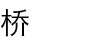 | qiáo | [名] 橋 新HSK4 |
| bān | [動] 運ぶ 新HSK3 |
| shūfu | [形] 気分がよい、気持ちがよい 新HSK3 |
| méi | [動] いない、ない（〔没有〕の略） [副] ...しなかった；...したことがない（〔没有〕の略） 新HSK1 |
| wèi | [前] ...のために 新HSK3 |
| zhèxiē | [代] これら |
| 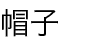 | màozi | [名] 帽子 新HSK3 |
| chuān | [動] 着る；はく 新HSK2 |
| shōushi | [動] 片付ける 新HSK4 |
| chūntiān | [名] 春 新HSK3 |
| T-27 |
| gè | [量] 最も広く使われる量詞 新HSK1 |
| xínglixiāng | [名] トランク、スーツケース 新HSK3 |
| gēn | [動] 後について行く 新HSK3 |
| li | [名] 中、内側 新HSK1 |
| dāngrán | [形] 当然である [副] もちろん、当然 新HSK3 |
| bízi | [名] 鼻 新HSK3 |
| shǔjià | [名] 夏休み |
| de | [助] 動詞または形容詞の後に置き、様態補語を導く 新HSK2 |
| duō | [形] 多い 新HSK1 |
| diàntī | [名] エレベーター 新HSK3 |
| miàntiáo | [名] 麺 新HSK3 |
 |
dìtiě | [名] 地下鉄 新HSK3 |
| kěyǐ | [助動] ...できる；...してもよい 新HSK2 |
| gāo | [形] 高い 新HSK2 |
 |
yīshēng | [名] 医者、医師 新HSK1 |
| shēn | [形] 深い 新HSK4 |
| fùjìn | [形] 付近の、近くの 新HSK3 |
| yòng | [動] 用いる、使う [前] ...で 新HSK3 |
| xiàng | [前] ...へ、...に（動作の向かう方向・対象を表す） 新HSK3 |
| zhǐ | [動] 指さす、指す 新HSK3 |
| T-28 |
| diǎnxin | [名] 点心、菓子 新HSK5 |
| píng | [量] ...本（瓶に入った物を数える） |
| xīngqí'èr | [名] 火曜日 |
| zhàn | [動] 立つ 新HSK3 |
| zhěngqí | [形] 整然としている、きちんとそろっている 新HSK4 |
| mǎi | [動] 買う 新HSK1 |
| nán | [名] 南 新HSK3 |
| jiù | [副] すぐに、じきに、まさしく、まさに、...ならば...である 新HSK2 |
| bú kèqi | [挨] どういたしまして 新HSK1 |
| qiú | [名] ボール、球技 |
| huídá | [動] 答える、返答する [名] 回答、答え 新HSK2 |
| xuésheng | [名] 生徒、学生 新HSK1 |
| wūzi | [名] 部屋 新HSK5 |
| fēng | [名] 風 |
| kànjiàn | [動] 見える、見かける 新HSK1 |
| nàge | [代] あの、その、あれ、それ |
| 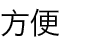 | fāngbiàn | [形] 便利である 新HSK3 |
| jī | [名] ニワトリ |
| xīn | [形] 新しい 新HSK2 |
| 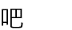 | ba | [助] 文末に置き、相談・要請・命令などの語気を表す 新HSK2 |
| T-29 |
| zhīdào | [動] （...のことを、...について）知っている、わかる 新HSK5 |
| xǐ//zǎo | [動] 風呂に入る 新HSK3 |
| guānyú | [前] ...に関して、...について、...に関する 新HSK3 |
| dēng | [名] 明かり、ランプ 新HSK3 |
| shòu | [形] 痩せている 新HSK3 |
| wán | [動] 遊ぶ 新HSK2 |
| shénme | [代] 何、疑問を表す 新HSK1 |
| 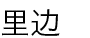 | lǐbian | [名] 中、中の方 |
| zǎofàn | [名] 朝食 |
 |
lóu | [名] 階、フロア 新HSK3 |
| jiǎo | [名] 角 [量] 角（貨幣の単位） 新HSK3 |
| suì | [量] ...歳 新HSK1 |
| zhàngfu | [名] 夫 新HSK2 |
| shàng//bān | [動] 出勤する、勤務する 新HSK2 |
| dǎsǎo | [動] 掃除する 新HSK3 |
| gōngsī | [名] 会社 新HSK2 |
 |
hóngchá | [名] 紅茶 |
| bàba | [名] お父さん 新HSK1 |
| bīngxiāng | [名] 冷蔵庫 新HSK3 |
| zuǐ | [名] 口 新HSK4 |
| T-30 |
| dú | [動] 朗読する；（声を出さずに）読む 新HSK1 |
| xuéxiào | [名] 学校 新HSK1 |
| huǒchē | [名] 汽車 |
| érqiě | [接] かつ、しかも 新HSK3 |
 |
chōu | [動] たばこなどを吸う |
| huí | [動] 帰る、戻る 新HSK1 |
| nián | [名] 年 新HSK1 |
| xiàyǔ | 雨が降る 新HSK1 |
| wèi | [量] 人を数える（敬意が含まれる） 新HSK3 |
| jiějué | [動] 解決する 新HSK3 |
| shuā//yá | [動] 歯を磨く 新HSK3 |
| dàifu | [名] 医者、先生（医者を呼ぶとき） 新HSK4 |
| xiàtiān | [名] 夏 新HSK3 |
| cū | [形] 太い |
| bǎo | [形] 満腹する 新HSK3 |
| gōngjīn | [量] キログラム 新HSK2 |
| gǎnxiè | [動] 感謝する 新HSK4 |
| pǔtōnghuà | [名] 現代中国の標準語 新HSK3 |
| yuèliang | [名] 月 新HSK3 |
| diànhuà | [名] 電話 |
| T-31 |
| zhāng | [量] 広い平面を持つものを数える 新HSK2 |
| 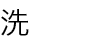 | xǐ | [動] 洗う 新HSK2 |
| chènshān | [名] ワイシャツ、ブラウズ 新HSK3 |
| de | [助] 連用修飾語の後に置き、動詞や形容詞を修飾する 新HSK3 |
| zánmen | [代] （話し手と聞き手を含む）私たち 新HSK4 |
| huàr | [名] 絵 |
| yéye | [名] （父方の）祖父 新HSK3 |
| shìjiè | [名] 世界 新HSK3 |
| tāmen | [代] それら |
| fángzi | [名] 家屋 |
| bǐ | [名] ペン |
| biànhuà | [名] 変化 新HSK3 |
 |
duàn | [量] （時間、文章、音楽、話など）事物の一区切りを数える 新HSK3 |
| gǒu | [名] 犬 新HSK1 |
| háishi | [接] ...かそれとも...か、 新HSK3 |
| qù | [動] 行く 新HSK1 |
| xiàbān | [動] 退勤する |
 |
zěnmeyàng | [代] いかがですか、どうですか 新HSK1 |
| yínháng | [名] 銀行 新HSK3 |
| bái | [形] 白い、白色の 新HSK2 |
| T-32 |
| 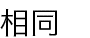 | xiāngtóng | [形] 同じである 新HSK3 |
| zuòyè | [名] 宿題 新HSK3 |
| táng | [名] 砂糖 新HSK3 |
| nóngmín | [名] 農民 新HSK5 |
 |
sòng | [動] 送って行く 新HSK2 |
| jiànkāng | [名] 健康 新HSK3 |
| běifāng | [名] 北；中国の北部 新HSK3 |
| yǐwéi | [動] ...と思っていた、思い込む 新HSK3 |
| 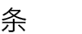 | tiáo | [量] 細長いものを数える 新HSK3 |
| qiānbǐ | [名] 鉛筆 新HSK3 |
| yíhuǐr | [名] ちょっとの間、しばらく 新HSK3 |
| fángjiān | [名] 部屋 新HSK2 |
| zhōngwǔ | [名] 昼、正午 新HSK1 |
| qián | [名] お金 新HSK1 |
| běnzi | [名] ノート |
| zhù | [動] 祈る、心から願う 新HSK3 |
| yīnwèi | [接] ...なので、なぜなら...であるから 新HSK2 |
| kuài | [量] 塊状のものを数える 新HSK1 |
| jiǔ | [数] 九 新HSK1 |
| hé | [前] ...と、...に 新HSK1 |
| T-33 |
| huā | [名] 花 新HSK3 |
| wǒmen | [代] 私たち 新HSK1 |
| 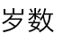 | suìshu | [名] 年齢 |
 |
dān//xīn | [動] 心配する 新HSK3 |
| juéde | [動] ...と思う、...と感じる 新HSK2 |
| lǜsè | [名] 緑 新HSK3 |
| yòubian | [名] 右、右側 新HSK2 |
| xīngqísān | [名] 水曜日 |
| zhège | [代] これ、この |
 |
nǎr | [代] どこ 新HSK1 |
| xióngmāo | [名] パンダ 新HSK3 |
| zhǎo | [動] 探す 新HSK2 |
| xiǎojie | [名] ...さん（若い女性に対する敬称） 新HSK1 |
| céng | [量] （重なっているものを数える）階、層、段、重 新HSK3 |
| niánqīng | [形] 年が若い 新HSK3 |
| lǐwù | [名] 贈り物、プレゼント 新HSK3 |
| wǒ | [代] 私、僕 新HSK1 |
| qīng | [形] 軽い 新HSK4 |
 |
zhī | [量] ...匹（動物を数える） 新HSK3 |
| mǎshàng | [副] ただちに、すぐに 新HSK2 |
| T-34 |
| fàng | [動] 放つ、休みになる、入れる、加える 新HSK3 |
| zhū | [名] ブタ 新HSK4 |
| piàoliang | [形] きれいである、美しい 新HSK1 |
 |
wǎnfàn | [名] 夕食 |
| yìbiān | [副] ...しながら...する 新HSK3 |
| jīhū | [副] ほとんど、ほぼ 新HSK3 |
| zhèng | 正面にある、表の [形]垂直の、まっすぐな、正しい、正当である 新HSK5 |
| dìtú | [名] 地図 新HSK3 |
| tūrán | [副] 突然、急に 新HSK3 |
| bǎ | [量] 取っ手のあるものを数える、一握りの量を数える [前] ...を（特定の対象に何らかの処置を加える） 新HSK3 |
| 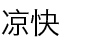 | liángkuai | [形] 涼しい 新HSK4 |
| kěnéng | [副] ...かもしれない 新HSK2 |
| xīnxiān | [形] 新鮮である 新HSK3 |
| pángbiān | [名] そば、近く 新HSK2 |
| wèi | [感] もしもし、おい 新HSK1 |
| 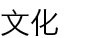 | wénhuà | [名] 文化 新HSK3 |
| yǐhòu | [名] その後、...の後 新HSK3 |
| zuò | [動] （仕事や活動を）する；作る 新HSK1 |
| huānyíng | [動] 歓迎する 新HSK2 |
| ma | [助] 疑問の語気を表す 新HSK1 |
| T-35 |
| wǔfàn | [名] 昼食 |
| shuì//jiào | [動] 寝る 新HSK1 |
| gē | [名] 歌 |
| shēnghuó | [名] 生活 新HSK4 |
| shēngyīn | [名] 声、音 新HSK3 |
| zhòngyào | [形] 重要だ 新HSK3 |
| Zhōngwén | [名] 中国語 新HSK4 |
| lěng | [形] 寒い、冷たい 新HSK1 |
| tóngxué | [名] クラスメート、同級生 新HSK1 |
| xī | [動] 吸う |
| jiéshù | [動] 終わる、終了する 新HSK3 |
| màn | [形] （速度）が遅い 新HSK2 |
| chē | [名] 車 |
| ròu | [名] 肉 |
| chuán | [名] 船 新HSK2 |
| líkāi | [動] 離れる 新HSK3 |
| rén | [名] 人、人間 新HSK1 |
| yàngzi | [名] 様子 新HSK4 |
| jìjié | [名] 季節 新HSK3 |
| zuìjìn | [名] 最近 新HSK3 |
| T-36 |
| jì | [動] 郵送する 新HSK4 |
 |
nǎinai | [代] （父方の）祖母 新HSK3 |
| gōngchǎng | [名] 工場 新HSK5 |
| yú | [名] 魚 新HSK2 |
| qiánbian | [名] 前、前の方 |
| qiáng | [名] 壁 新HSK4 |
| nàr | [代] そこ、あそこ 新HSK1 |
| nǎge | [代] どの、それ |
| yángròu | [名] 羊肉 新HSK2 |
| nuǎnhuo | [形] 暖かい 新HSK4 |
| rènwéi | [動] ...と思う、...と考える 新HSK3 |
| càidān | [名] メニュー 新HSK3 |
| chángcháng | [副] いつも、しょっちゅう |
| kuàizi | [名] 箸 新HSK3 |
| yá | [名] 歯 |
| wǎn | [形] （時間が）遅い |
| wàng | [動] 忘れる |
| 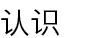 | rènshi | [動] 見知っている、知り合う 新HSK1 |
| sùshè | [名] 寮、宿舎 新HSK5 |
| gēge | [名] 兄 新HSK2 |
| T-37 |
| hào | [名] 日にち、日 新HSK2 |
 |
yù//dào | [動] 出会う、出くわす 新HSK3 |
| máo | [名] 毛 新HSK5 |
| qīzi | [名] 妻 新HSK2 |
| tī zúqiú | サッカーをする 新HSK2 |
| yīyuàn | [名] 病院 新HSK1 |
| qiánnián | [名] おととし |
| gōngrén | [名] 労働者、工員 新HSK5 |
| yǐjing | [副] すでに、もう 新HSK2 |
| niúnǎi | [名] 牛乳 新HSK2 |
| gàosu | [動] 教える、伝える 新HSK2 |
| yìbān | [形] 普通である 新HSK3 |
| xuǎnzé | [名] 選択 新HSK3 |
| 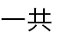 | yígòng | [副] 合計、全部で 新HSK3 |
| yídìng | [副] きっと、必ず [形] 一定の、決まった 新HSK3 |
| niánjí | [名] 学年 新HSK3 |
| duōme | [副] どんなに（...でも） 新HSK3 |
| qǐ | [動] 起きる、起床する |
| chídào | [動] 遅刻する 新HSK3 |
| huà | [動] 描く [名] 絵、絵画 新HSK3 |
| T-38 |
| bàn | [名] 半分、半ば、真ん中 新HSK3 |
| dàjiā | [代] みんな、みなさん 新HSK2 |
 |
jiǎnchá | [動] 検査する、チェックする 新HSK3 |
| yào | [名] 薬 新HSK2 |
| 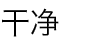 | gānjìng | [形] 清潔である、きれいである、 新HSK3 |
| xiǎo | [形] 小さい 新HSK1 |
| chà bu duō | [副] ほぼ、ほとんど（同じく） 新HSK4 |
| jiào | [動] 呼ぶ 新HSK1 |
| huǒchēzhàn | [名] 列車の駅 新HSK1 |
| pútáo | [名] ブドウ 新HSK3 |
| yuè | [副] すればするほど 新HSK3 |
| bú cuò | [形] よい、すばらしい |
| dàxué | [名] 大学 |
| wèidao | [名] 味 新HSK4 |
| nǐmen | [代] あなたたち |
 |
shēng//qì | [動] 怒る、腹を立てる 新HSK3 |
| túshūguǎn | [名] 図書館 新HSK3 |
| è | [形] 空腹になる、飢えている 新HSK3 |
| zhǔyào | [形] 主要な、主な 新HSK3 |
| báitiān | [名] 昼間 |
| T-39 |
| zǒu | [動] 歩く、行く、その場を離れる 新HSK2 |
| shēng//bìng | [動] 病気になる 新HSK2 |
| míngnián | [名] 来年 |
| máng | [形] 忙しい 新HSK2 |
| rì | [名] 日、一日 新HSK1 |
| qiān | [数] 千 新HSK2 |
| tāng | [名] スープ 新HSK4 |
| kāishuǐ | [名] 湯 新HSK6 |
 |
èr | [数] 二 新HSK1 |
| dàngāo | [名] ケーキ 新HSK3 |
 |
hòutiān | [名] あさって |
| tián | [形] 甘い 新HSK3 |
| liù | [数] 六 新HSK1 |
| shàngkè | [動] 授業に出席する |
| yīfu | [名] 服 新HSK1 |
| shùxué | [名] 数学 新HSK3 |
| guān//xīn | [動] 感心をもつ、気にかける 新HSK3 |
| jiějie | [名] 姉 新HSK2 |
| chàng | [動] 歌う |
| hē | [動] 飲む 新HSK1 |
| T-40 |
| hǎokàn | [形] 美しい |
| guǒzhī | [名] ジュース 新HSK3 |
| xìn | [名] 手紙 新HSK3 |
| gāoxìng | [形] 嬉しい、機嫌がいい 新HSK1 |
| chū | [動] 出す；出る 新HSK2 |
| xìngqù | [名] 興味 新HSK3 |
| chī | [動] 食べる 新HSK1 |
| zuòyòng | [名] 働き、役割 新HSK3 |
| shìqing | [名] 事、出来事、用事、事柄 新HSK5 |
| piányi | [形] 安い 新HSK2 |
| diànnǎo | [名] コンピューター 新HSK1 |
| gěi | [前] ...のために、...に 新HSK2 |
| xīngqísì | [名] 木曜日 |
| méi guānxi | [挨] 大丈夫です、かまいません 新HSK1 |
| liú//xué | [動] 留学する 新HSK4 |
| gōngyuán | [名] 公園 新HSK3 |
| bú yào | [副] ...してはいけない |
| cháng | [副] いつも、しょっちゅう |
| téng | [形] 痛い 新HSK3 |
| yìsi | [名] 意味 新HSK2 |
| T-41 |
| jìn | [動] （中へ）入る 新HSK2 |
| jiémù | [名] 番組、出し物、演目 新HSK3 |
| zhōng | [名] 掛け時計、置き時計、時間を表す 新HSK5 |
| hái | [副] まだ、依然として 新HSK2 |
| guòqù | [名] 過去 新HSK3 |
 |
xǐhuan | [形] 好き 新HSK1 |
| nán | [形] 難しい 新HSK3 |
| liǎn | [名] 顔 [名] 面目、顔、メンツ 新HSK3 |
| shǐ | [動] ...させる 新HSK3 |
| ǎi | [名] （背が）低い 新HSK3 |
| chàng gē | 歌を歌う 新HSK2 |
| wǎngqiú | [名] テニス 新HSK4 |
| jǔxíng | [動] （集会・試合などを）行う 新HSK3 |
| shēntǐ | [名] 体 新HSK2 |
| gāngcái | [名] 先ほど、今しがた 新HSK3 |
 |
bāngzhù | [動] 助ける、援助する、協力する 新HSK2 |
| diǎn | [量] ...時（計時に使う） 新HSK1 |
| lǎolao | [名] （母方の）祖母 新HSK5 |
| xīngqírì | [名] 日曜日 |
| tāmen | [代] 彼ら |
| T-42 |
| fùxí | [動] 復習する 新HSK3 |
| bàn | [動] 処理する、（手続きを）する |
| jiérì | [名] 祝祭日 新HSK3 |
| shì | [動] ...だ、...である 新HSK1 |
| māma | [名] お母さん 新HSK1 |
| qī | [数] 七 新HSK1 |
| yóupiào | [名] 切手 |
| máfan | [動] 面倒をかける 新HSK4 |
| shǒu | [名] 手 |
| dī | [形] 低い 新HSK3 |
| rúguǒ | [接] もし...ならば 新HSK3 |
| lù | [名] 道、道路 新HSK2 |
| zhòng | [形] 重い 新HSK5 |
| tí//gāo | [動] 向上させる、引き上げる、高める 新HSK3 |
| lèi | [動] 疲れる 新HSK5 |
| bú tài | あまり...ない |
音声のダウンロード方法
以下の手順で音声ファイルをダウンロードして頂くことができます。
▼ ダウンロードの手順
1. ブラウザを開き、下記URLを開いてください。
http://files.ready.jp/chukenz4/
2. 以下のパスワードを入力し、「送信」ボタンを押してください。
kenteiz4
3. ダウンロードのページが表示されます。ページの内容に従ってダウンロードを開始してください。ダウンロードしたMP3音声ファイルは、スマートフォン、タブレット、携帯プレーヤーなどへ転送も可能です。（※ Kindle Paperwhiteでは音声の再生はできません。）
▼ 注意事項
1. 音声データは、本書をご購入いただいた方ご自身でお聞きになる場合にのみ使用できます。その他の用途での使用や配布、改変などは一切できません。
2. 音声データの著作権は、文音出版に帰属します。
3. 音声データを実行した結果については、文音出版は一切の責任を負いかねます。お客様の責任においてご利用ください。
まずはこれだけ・中国語入門単語836 (音声DL付)／中検準4級＆新HSK1〜3級語彙
初版：2014年4月13日
出版元：文音出版